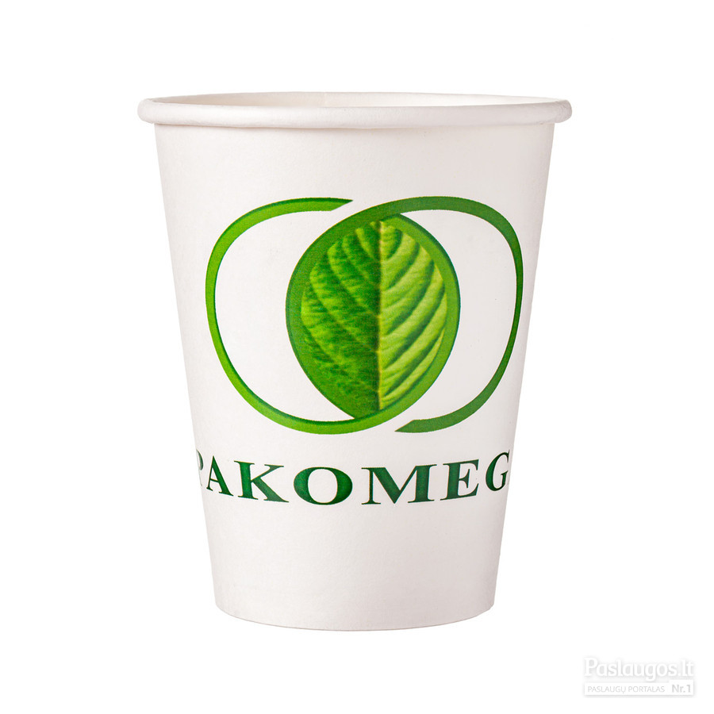

Puodeliai, Suvenyrai Puodeliai - Fotofabrikas Stikliniai kavos puodeliai yra skaidrūs, todėl įgauna bet kokio gėrimo spalvą ir charakterį, ilgiau palaiko jų originalią temperatūrą. Dažniausiai gaminami iš grūdinto stiklo, jie pasižymi tvirtumu ir atsparumu mechaniniams smūgiams, todėl galite nesijaudinti, kad nukritę jie lengvai suduš.
PUODELIAI - JŪSŲ MĖGSTAMIEMS GĖRIMAMS || 1A.LT Kasdieniniai puodeliai. Plonojo kaulinio porceliano rankų darbo puodeliai su žaismingais dekorais. 1 - 32 iš 135 Puodelis Dizainas 3. Plono kaulinio porceliano puodelis. Kaina 17 50 € Puodelis Dizainas 3 ...
Kavos puodeliai internetu: greita ir patogu | Žana Puodeliai internetu pigiau. Kavos puodeliai, espresso puodukai, puodeliai arbatai bei daugelis kitų - patraukliausiomis kainomis. Nepraleisk progos sutaupyti!
Puodeliai internetu | pigu.lt Didelis kokybiškų puodelių pasirinkimas. Įvairių dydžių, spalvų ir tipų puodeliai už gerą kainą. Puodeliai skirti dovanoms.
Puodeliai - Tukitoks.lt Išskirtiniai puodeliai tobulai dienos pradžiai Dauguma mūsų savo rytą pradeda nuo puodelio kavos ar arbatos. Tai – vienas tų mažų ritualų, kurie lemia puikią dienos pradžią, ir gana dažnai džiaugsmo teikia ir pasirinkti puodeliai.
Rankų darbo puodeliai su lėkštelėmis | Jiesia ... Keramikiniai, porcelianiniai reklaminiai puodeliai kavai ar arbatai su užrašais, logotipais ar pasirinktais paveikslėliais yra lengvai pastebimas ir kasdien naudojamas verslo suvenyras. Reklaminis puodelis – tai praktiška verslo dovana kolegai, verslo partneriui ar klientui. Puodelis yra efektyvi reklama Jūsų įmonei, prekiniam ženklui ar pasirinktai akcijai.
Reklaminiai puodeliai Rankų darbo komplektai (puodeliai su lėkštelėmis) 1 - 32 iš 85 Komplektas Kūlverstis. Kaina 32 30 € Komplektas arbatai. Plonojo kaulini porceliano komplektas arbatai. ...
Kasdieniniai puodeliai | Jiesia | porcelianas | puodeliai ... Puodeliai (108) Alaus mėgėjams (22) Dovanos vyrams (108) Dovanos moterims (76) Retro ir Vintažas (31) Idėjos vakarėliams (41) Dovanos vaikams (33) Ekologiški indai vaikams (4) Moteriškos kuprinės (45) Taupyklės (11) Laikrodžiai (6) Laisvalaikiui ir poilsiui (22) Aromaterapija (14)
Puodeliai | C&D Style
2020.10.30 02:50

C&D Style kliento kortelė Toggle navigation Krepšelis Iš viso: krepšelis Dovanų idėjos Dovanos vyrams Sąsagos Vyriški šalikai Vyriški chalatai Pinigų segtukai Kosmetika vyrams Kosmetinės vyrams Skutimosi priemonės Daugiafunkciniai įrankiai Vyriškos piniginės Verslo dovanos Rašikliai Gaubliai Užrašų knygutės Dokumentų dėklai Biuro aksesuarai Raktų pakabukai Darbo kalendoriai Vizitinių kortelių dėklai Astronominiai prietaisai Originalios dovanos Stalo žaidimai Raktų laikikliai Pirkinių krepšiai Veido kaukės Lagaminų apsaugos Kelioniniai aksesuarai UMBRA daiktai PHILIPPI daiktai HUGO BOSS aksesuarai Atvirukai Vestuvių atvirukai Sveikinimo atvirukai Gimtadienio atvirukai Dovanos moterims Papuošalai Moteriški šalikai Moteriški chalatai Kosmetika moterims Moteriškos piniginės Skėčiai Įkurtuvių dovanos Dovanos iki 15 € Dovanos poroms Dovanos vaikams Prabangios dovanos Dovanos vestuvėms Naujienos KALĖDOMS Eglutės žaisliukai Figūrėlės Gyvūnai Apvalūs žaisliukai Eglutės viršūnės Kalėdiniai papuošimai Kalėdinės dekoracijos INTERJERUI Vonios aksesuarai Muilas Muilinės Kosmetinės Vonios indeliai Muilo dozatoriai Dantų šepetėlių laikikliai Vonios indelių kolekcijos Tualeto aksesuarai Vonios veidrodžiai Tualetinio popieriaus laikikliai Namų kvapai Garintuvės Kvapai spintoms Automobilių kvapai Kvepiančios gėlės Purškiami kvapai namams Namų kvapai su lazdelėmis Namų kvapų papildymai Vazos Stiklinės vazos Krištolinės vazos Keramikinės vazos Didelės vazos Aukštos vazos Žvakidės Stiklinės žvakidės Žibintai žvakėms Žvakidės iš metalo Didelės žvakidės Padėklai žvakėms Šeimos židiniai Dėžutės papuošalams ir laikikliai Žiedų laikikliai Papuošalų dėžutės Laikrodžių dėžutės Papuošalų laikikliai Muzikinės papuošalų dėžutės Žaislai Kūdikių žaislai Magnetiniai žaislai Minkšti žaislai Mediniai žaislai Muzikinės dėžutės Vaikiški indai Vaikų kambariui Nuotraukų rėmeliai Mediniai rėmeliai Metaliniai rėmeliai Dideli nuotraukų rėmeliai Nuotraukų rėmeliai koliažai Laikrodžiai Smėlio laikrodžiai Staliniai laikrodžiai Sieniniai laikrodžiai Žvakės Žvakės Kvepiančios žvakės Žvakių aksesuarai Vazonai Keramikiniai vazonai Knygų laikikliai Sienų dekoracijos Namų aksesuarai Dirbtinės gėlės Statulėlės Taupyklės Šviestuvai Valgomajam Puodeliai Kavos puodeliai Arbatos puodeliai Puodelių rinkiniai Puodeliai poroms Stikliniai puodeliai Puodeliai su užrašu Keramikiniai puodeliai Porcelianiniai puodeliai Puodeliai su lėkštutėmis Lėkštės Pietų lėkštės Lėkštės sriubai Užkandžių lėkštės Serviravimo lėkštės Desertinės lėkštės Porcelianinės lėkštės Dekoratyvinės lėkštės Stalo serviravimas Ledainės Torto stovai Servetėlių žiedai Stalo padėkliukai Serviravimo stovai Servetėlių laikikliai Popierinės servetėlės Stikliniai indai ir gaubtai Maisto laikymo indai Pipirinės Druskinės Cukrinės Sviestinės Stikliniai indai su dangčiu Indai biriems produktams Dubenys Salotinės Dubenėliai Dubenėliai sriubai Krištoliniai dubenys Dekoratyviniai dubenys Stiklinės ir taurės Stiklinės Vyno taurės Alaus taurės Viskio taurės Šampano taurės Kokteilių taurės stikliukai Grafinai ir ąsočiai Ąsočiai Vyno grafinai Grafinai viskiui Grafinai degtinei Grafinai vandeniui Krištolinės taurės ir stiklinės Krištolinės stiklinės Krištolinės vyno taurės Krištolinės viskio taurės Krištolinės taurės šampanui BOHEMIA krištolas Virtuvės aksesuarai Arbatos sieteliai popierinių rankšluosčių laikikliai Kiaušinių indeliai Indai actui ir aliejui Sūrio pjaustymo rinkiniai Stalo įrankiai Įrankiai salotoms Desertiniai įrankiai Stalo įrankių rinkiniai Torto pjaustymo įrankiai Vyno aksesuarai Stovas vynui Vyno kamštis Vyno atidarytuvas Kelioniniai indeliai Gertuvės Termo puodeliai Kelioniai puodeliai Arbatinukai Ketaus arbatinukai Keramikiniai arbatinukai Porcelianiniai arbatinukai Padėklai Metaliniai padėklai Serviravimo padėklai Baro reikmenys Šeikeris kokteiliams Šaldymo indai Porcelianiniai indai Vista Alegre indai Bombay Duck indai TEKSTILĖ IR BALDAI Patalynė Patalynės komplektai Paklodės Pagalvės Antklodės Pagalvių užvalkalai Antklodės užvalkalai Miegamojo baldai Miegamojo spintos Miegamojo komodos Kosmetiniai staliukai Miegamojo lovos Miegamojo veidrodžiai Spintelės prie lovos Svetainės baldai sofos Krėslai ir sofos Svetainės staliukai Lentynos Rašomieji stalai Komodos TV staliukai Valgomojo baldai Valgomojo kėdės Valgomojo stalai Indaujos Bufetai Metaliniai baldeliai ir aksesuarai Konsoliniai staliukai Staliukai Lentynėlės Kabyklos Veidrodžiai skėčių stovai Chalatai Vyriški chalatai Chalatai moterims Rankšluosčiai Vonios rankšluosčiai Paplūdimio rankšluosčiai Vonios kilimėliai Kilimai Pledai Išpardavimas Dovanų kuponas Nemokamas dovanų pakavimas Turite klausimų? +370 620 530 24 Nemokamas pristatymas nuo 39 € Pagrindinis Puodeliai Pagrindinis - Puodeliai 85 prekės(-ių) 1 2 3 4 5 6 ▸ Rikiavimas Brangiausios viršuje Pigiausios viršuje Z-A A-Z Naujausios Naujiena
Puodelis „Big or small hearts“
10.00 € Naujiena
Puodelis „Faccette cappuccino -...
9.50 € Naujiena
Puodelis „Faccette cappuccino - pale...
9.50 € Naujiena
Puodelis „Faccette cappuccino - hint...
9.50 € Naujiena
Puodelis „Faccette cappuccino - cream...
9.50 € Naujiena
Puodelis „Coppa“ mėlynas
10.00 € Naujiena
Puodelis „Coppa Santorini color mix“...
10.00 € Naujiena
Puodelis „Coppa Santorini city“
10.00 € Naujiena
Puodelis „Coppa Marrakech color mix“...
10.00 € Naujiena
Puodelis „Coppa Marrakech city“
10.00 € Naujiena
Kelioninis puodelis „Cup & Go -...
23.00 € Naujiena
Kelioninis puodelis „Cup & Go -...
20.00 €
PUODELIS SU LĖKŠTELE „STRIPY BLUE“
26.00 € Naujiena
Puodelis be ąselės „Zinc“
4.40 € Naujiena
Puodelis be ąselės „Zinc“
6.40 € Naujiena
Puodelis „Abeille“
8.00 € Išparduota 1 2 3 4 5 6 ▸ Apie mus Kaip pirkti? Taisyklės Privatumo politika Lojalumo programa Galerija Straipsniai Kontaktai Sekite mus: Sukurta Sonaro Mūsų svetainėje naudojami slapukai (ang. cookies), kad užtikrintume jums teikiamų paslaugų kokybę. Tęsdami naršymą jūs sutinkate su C&D Style slapukų politika Susipažinau 10% nuolaida Jūsų pirmam apsipirkimui! Užsisakę naujienlaiškį pirmieji sužinosite apie naujienas, pasiūlymus bei akcijas! Sutinku gauti informaciją apie „C&D Style“ pasiūlymus, naujienas bei akcijas. Jūs užsisakėte naujienlaiškį. Detalesnė informacija Jūsų pašto dėžutėje.